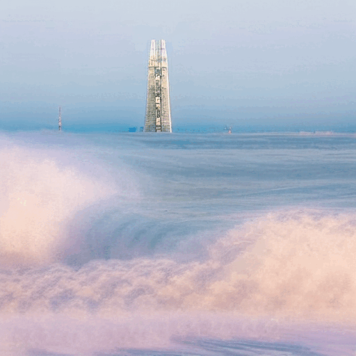
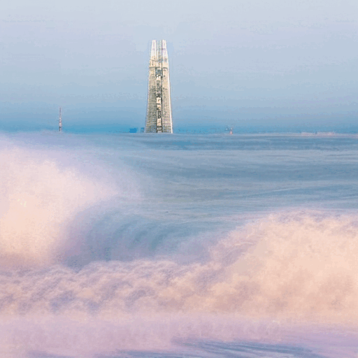

Motion-to-Attention: Enhancing Attention Maps to Improve Performance of Text-Guided Video Editing Models
Seong-Hun Jeong*,
Inhwan Jin*,
Haesoo Choo*,
Hyeonjun Na*,
Kyeongbo Kong†
Pusan National University, Pukyong National University
*Indicates Equal Contribution
†Corresponding Author


 
